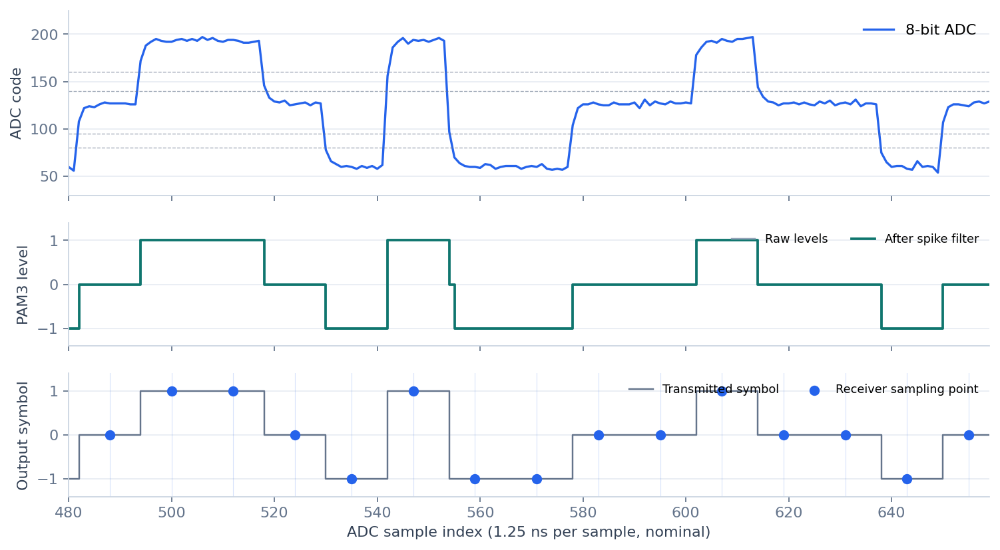
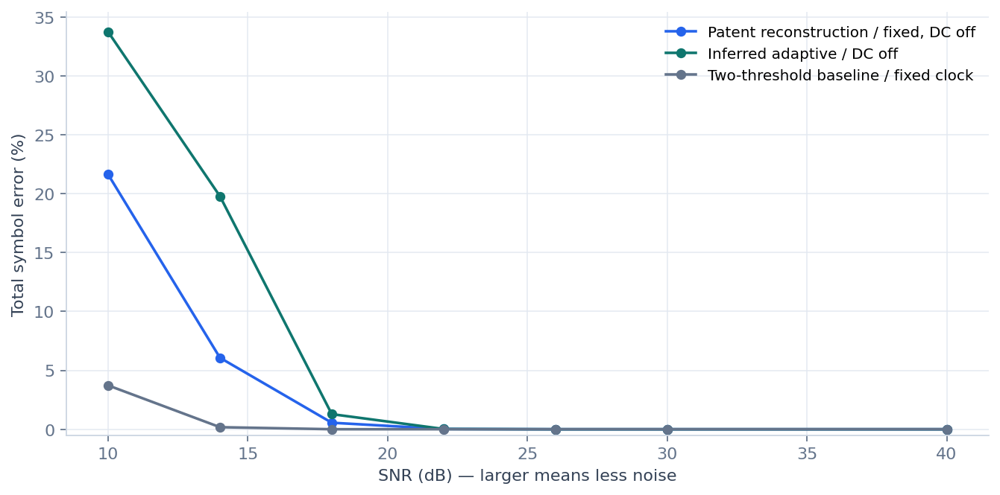
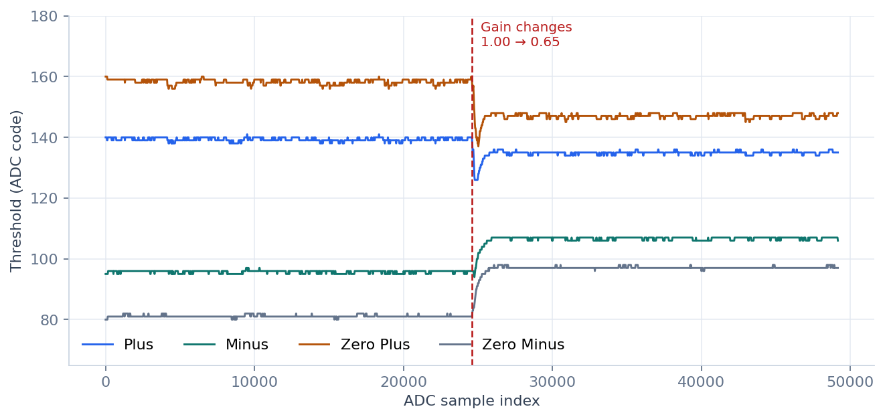
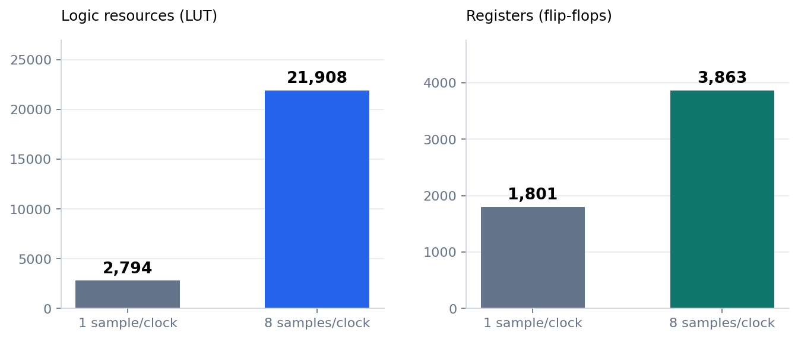

From ADC samples to PAM3 symbols
A real saved trace from the simulation • Master channel • SNR 30 dB
ADC boundary8-bit / 800 MS/sNominal sampling model
Receiver settings140 / 95 / 160 / 80Fixed thresholds · DC bypass
Shown window15 output symbolsSamples 480–659 · one recorded run
Signal, decoded levels and chosen sampling points
Dots mark the samples actually selected by the receiver.

What the code does
| Stage | Operation |
|---|
| 1 · DC | Bypassed in this view |
| 2 · Level | Slope + four thresholds |
| 3 · Spike | Isolated runs ≤2 samples |
| 4 · Edges | Must events + edge filters |
| 5 · Timing | 12-sample step + resync |
| 6 · Output | Read filtered level |
The transmitter trace is used for evaluation only. Its labels and timing are not inputs to the receiver.
pam3/model.py
rtl/pam3_stream_core.sv
Source: SNR_30_master.npz · Python behavioural channel, not a measured cable.
How noise changes the decoding result
Performance against the known transmitted symbols • recorded Monte Carlo runs
30 dB0 / 40,560No error observed in this test
18 dB0.552% error224 failed symbol intervals
10 dB21.635% error8,775 failed symbol intervals
Noise sweep
Five seeds × two channels; 40,560 evaluated symbols per SNR and method.

Fixed receiver · DC off
| SNR | Errors / evaluated | Rate |
|---|
| 30 dB | 0 / 40,560 | 0.000% |
| 18 dB | 224 / 40,560 | 0.552% |
| 10 dB | 8,775 / 40,560 | 21.635% |
A symbol succeeds only if its interval contains exactly one output, with the correct value.
| At 18 dB | Failed intervals |
|---|
| Wrong value | 86 |
| Missing output | 1 |
| Repeated outputs | 137 |
| Total | 224 |
Metric: 100 × failed symbol intervals / evaluated intervals. First 32 and last 8 symbols excluded. Baseline and adaptive results are shown on the same scale; no universal winner is assumed.
Threshold tracking — and a DC ambiguity
The adaptive update is an engineering reconstruction; the patent does not disclose its exact equation.
Gain-step test · fixed6.805% error552 / 8,112 evaluated symbols
Gain-step test · adaptive0.136% error11 / 8,112 evaluated symbols
Literal DC · 30 dB65.303% error26,487 / 40,560 · documented limitation
Four thresholds follow a change in amplitude
Saved floating-point Python trace; the RTL uses a separately verified Q8 update.

Stress cases · error rate
Two channels · 8,112 evaluated symbols per case and method.
| Case | Fixed | Adaptive | Baseline |
|---|
| Gain step 1 → 0.65 | 6.805% | 0.136% | 0.000% |
| DC offset +25 codes | 31.842% | 0.012% | 0.000% |
| DC offset −25 codes | 0.000% | 0.000% | 0.000% |
| Slow signal edges | 0.000% | 0.148% | 7.507% |
Literal DC issue: y = x − MIN + 95 is always ≥95 when the window includes x, while the reconstructed −1 decision needs y <95. DC bypass is the default. The update rule, rounding and missing constants are documented.
Does the hardware execute the intended algorithm?
Icarus Verilog 12.0 • streaming SystemVerilog compared with the independent Python reference
Symbol comparisons73,206Across all eight settings
Channel capture tests1,440Includes core + paired-channel tests
Configuration result8 / 8 matched16 RTL executions · recorded suite
All eight RTL configurations
Each configuration includes a core test and a two-channel packed-output test.
| Samples/clock | DC | Thresholds | Core symbols | Two-channel symbols | Match |
|---|
| 1 | Off | Fixed | 3,098 | 6,202 | PASS |
| 1 | On | Fixed | 2,984 | 5,967 | PASS |
| 1 | Off | Q8 | 3,090 | 6,175 | PASS |
| 1 | On | Q8 | 3,032 | 6,055 | PASS |
| 8 | Off | Fixed | 3,098 | 6,202 | PASS |
| 8 | On | Fixed | 2,984 | 5,967 | PASS |
| 8 | Off | Q8 | 3,090 | 6,175 | PASS |
| 8 | On | Q8 | 3,032 | 6,055 | PASS |
Checks beyond symbol values
- Corrected ADC and raw/filtered levels
- Exact sampling indices and output order
- Empty, short and partial input blocks
- One-, two- and three-sample pulses
- Source bubbles and output stalls
- End-of-capture flushing and reset
- Independent channel decisions
- Host record format and parser
PASS means agreement with the independent reference. It does not mean zero error against a noisy transmitter.
Recorded Icarus log · 8 samples/clock, fixed thresholds, DC off
The original log and machine-readable validation are included in 03_FPGA/results/verification/.
PASS frames=120 cycles=7822 records=294 source_stalls=1735 sink_stalls=2554
From RTL to FPGA logic resources
Yosys 0.33 • generic Xilinx 7-series mapping • two channels, packers and host multiplexer
Synthesized modeFixed · DC off1 and 8 samples per clock
Inferred latches0Structural checks passed
Mapped-netlist outputs2,168 matchedFunctional simulation; no timing delays
Resource cost of eight-sample processing
Chronological dependencies are unrolled; the larger mode uses more logic.

Mapped resources
| Mode | LUT | Flip-flop | Latch |
|---|
| 1 sample(s)/clock | 2,794 | 1,801 | 0 |
| 8 sample(s)/clock | 21,908 | 3,863 | 0 |
Post-synthesis functional test
| Mode | Samples | Symbols | Match |
|---|
| 1 sample(s)/clock | 20,404 | 1,871 | PASS |
| 8 sample(s)/clock | 3,170 | 297 | PASS |
Implemented: digital reconstruction and functional mapped-netlist checks. Still to verify: physical ADC/clock interface, board I/O, place-and-route timing and real-channel measurements. Vivado scripts are provided but were not run. The 100 MHz / 800 MS/s target has not been measured.